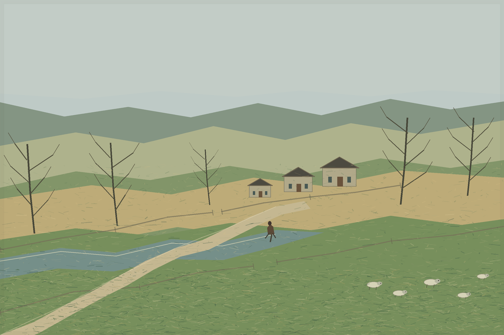

After the Shower, East of the Tay
Digital painting, 1200 × 800
A pale track crosses the fields toward three cottages while sheep graze on the near slope. The arrangement is imagined, not a view of a particular farm or a historical record. I began with James McIntosh Patrick’s careful relation of path, field, wall, weather, and small figure, then made a landscape of my own.